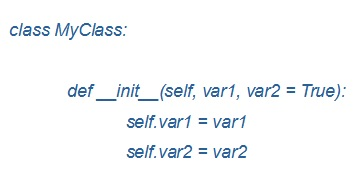
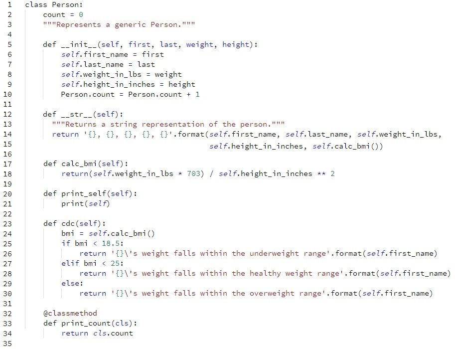
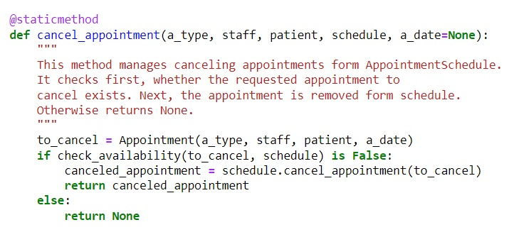
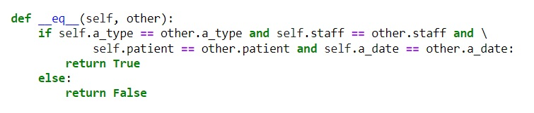

Object-Oriented Programming
My work through the module on Object-Oriented Programming.

My work through the module on Object-Oriented Programming.
1) A class has a collection of instructions on how to build its objects and how they behave. An important part of every class is its constructor, which is a collection of attributes. Creating an object we provide their values unless they have a default value.
2) Practising object There is also the possibility to implement an attribute outside a constructor. And then they belong to the whole class. They are shared by all instances and any change applied to it causes the same change in all object of this class. Variables created inside a constructor belong to the object instance.
Reflections:
In Tutorial Labs about Classes and Objects I had to create a Person class with four variables. These variables are public (can be accessible form outside the class) and the example of that (iterating a list of objects and printing their names) was shown on picture below.
Learning outcomes:
1. Functions are not associated with any objects and can be invoke by their names. They are independent element of code. Methods, are associated with objects and they cannot be invoked only using their names. They are object dependent.
2. We can use decorators like @classmethod to make a class method, that changes the state of the whole class (not only one object). If a method uses only class variables then is should have this decorator. This method has ‘cls’ as a parameter. It was used in challenge one about class functions and methods to print the actual value of “count”:
3. Static method (decorated with @staticmethod) is a general method that perform a task that is non-related to a class or an object and does not use ‘self’ or ‘cls’. I have used it in my System Implementation assignment. This method performs a task that is not related to its class and class’ variables.
Reflection:
In Codio exercises, I implemented Inheritance in practice. Person Class is a parent class for Adult Class. However, Adult Class is at the same time a parent class for Teacher. There is a chain relationship between these classes that make them similar but some changes and distinguishing elements were applied like adding one functionality in Adult Class and rewriting attributes in Teacher class.
Learning outcomes:
1. A subclass is a class that inheritance from a superclass, a construct of variables and methods (“Is-A” relationship). Child classes can be considered as a more specialised type of Parent class.
2. Variables and methods can be overwritten in subclasses to introduce some changes, while still keeping essential similarities to the superclass. I applied this functionality in the exercise about Inheritance.
3. A concept of multiple inheritances, in which a subclass inheritance forms more than one superclass. This approach is not present in some programming languages (like Java, C# or Kotlin).
1. Encapsulation is used to hide data and functionality and prevent their changes or use outside classes.
2. Attributes can be defined as private, Python, however, is more flexible. there is a common practice that variables with one underscore are assumed as private (``_var``), with double underscore convention (``__var``) are not accessible directly.
3. Access to private variables can be given by getters and setters using property decorators or property functions.
Reflections:
In object-oriented programming, polymorphism means when different behaviour of a function or method is observed depending on which subclass is used for the task.
Learning outcomes:
1. Method overriding – a subclass overrides a method of the superclass and acts differently from the original.
2. Method Overloading – a set of classes have methods with the same name and other methods or a function can use their name and depending on what object is used, different outcomes may be given.
3. Operator Overloading – the same operator may give different results based on what type of variables is passed.
4. Magic Methods are a set of special built-in functions in Python to manipulate objects. I have implemented this type of polymorphism in my System Implementation assignment, where I wanted to compare two objects and check if they have the same values.
5. Duck Typing – it does not matter what type of object is passing to a method or function, as long as it can properly perform its job.